Contents
- Brewer Evaluation
- READ Brewer Summaries
- configuration files
- DT analysis_
- SL Report
- SL report plot
- Hg Report
- READ Configuration
- Data recalculation for summaries and individual observations
- Filter distribution
- filter correction
- Ozone Calibration
- Change? No change
- Blind Period
- Sugerido con los blind_days
- Blind days table
- Final Period
- TEST NEW CONFIG
- FINAL CONFIG
- TWO POINT CALIBRATION
- STRAY
- Latex variables
- calculation
- Apply the SL correction
- Difference iter#1 to iter#2
- Final days table
- Summary Final Comparison all data detailed for osc ranges
- Plot daily summary
- final days: final config.
- detailed comparison
% options_pub.outputDir=fullfile(pwd,'latex','174','html'); options_pub.showCode=true; % close all; publish(fullfile(pwd,'cal_report_174c.m'),options_pub);
Brewer Evaluation
clear all; file_setup='arenos2019_setup'; eval(file_setup); % configuracion por defecto Cal.n_inst=find(Cal.brw==174); Cal.file_latex=fullfile('.','latex',Cal.brw_str{Cal.n_inst}); Cal.dir_figs=fullfile('latex',filesep(),Cal.brw_str{Cal.n_inst},... filesep(),[Cal.brw_str{Cal.n_inst},'_figures'],filesep()); mkdir(Cal.dir_figs); try save(Cal.file_save,'-Append','Cal'); %sobreescribimos la configuracion guardada. load(Cal.file_save); catch disp('clean'); save(Cal.file_save); end % Brewer setup Cal.Date.CALC_DAYS=Cal.calibration_days{Cal.n_inst,1}; Cal.n_ref=find(Cal.brw==185);
ans =
1×1 cell array
{'IZO#185'}
ans =
20×9 cell array
Columns 1 through 5
{'TSK#005'} {[ 5]} {[2]} {[0]} {'005'}
{'IOS#017'} {[ 17]} {[2]} {[0]} {'017'}
{'SCO#033'} {[ 33]} {[2]} {[0]} {'033'}
{'MAD#070'} {[ 70]} {[4]} {[0]} {'070'}
{'UK_#075'} {[ 75]} {[4]} {[0]} {'075'}
{'MUR#117'} {[117]} {[4]} {[0]} {'117'}
{'UK_#126'} {[126]} {[4]} {[0]} {'126'}
{'ARE#150'} {[150]} {[3]} {[0]} {'150'}
{'COR#151'} {[151]} {[4]} {[0]} {'151'}
{'K&Z#158'} {[158]} {[3]} {[0]} {'158'}
{'WRC#163'} {[163]} {[3]} {[0]} {'163'}
{'ZAR#166'} {[166]} {[4]} {[0]} {'166'}
{'UK_#172'} {[172]} {[3]} {[0]} {'172'}
{'JAP#174'} {[174]} {[3]} {[0]} {'174'}
{'IZO#185'} {[185]} {[3]} {[0]} {'185'}
{'MAD#186'} {[186]} {[3]} {[0]} {'186'}
{'CAN#190'} {[190]} {[3]} {[0]} {'190'}
{'TAM#201'} {[201]} {[3]} {[0]} {'201'}
{'DNK#202'} {[202]} {[3]} {[0]} {'202'}
{'DNK#228'} {[228]} {[3]} {[0]} {'228'}
Columns 6 through 9
{'..\005\ICF15117…'} {'..\005\ICF17219…'} {'1838'} {'1838'}
{'..\017\ICF14919…'} {'..\017\ICF14919…'} {'1680'} {'1680'}
{'..\033\ICF15617…'} {'..\033\IOS15617…'} {'2325'} {'2325'}
{'..\070\ICF15617…'} {'..\070\IOS15617…'} {'1685'} {'1685'}
{'..\075\ICF15017…'} {'..\075\ICF17819…'} {'1714'} {'1714'}
{'..\117\ICF15517…'} {'..\117\IOS15517…'} {'1620'} {'1620'}
{'..\126\icf15517…'} {'..\126\ICF17419…'} {'1710'} {'1710'}
{'..\150\ICF15617…'} {'..\150\ICF15617…'} {'0322'} {'0322'}
{'..\151\ICF15317…'} {'..\151\IOS15317…'} {'1880'} {'1880'}
{'..\158\ICF21218…'} {'..\158\ICF21218…'} {'0558'} {'0558'}
{'..\163\ICF21018…'} {'..\163\ICF17519…'} {'0274'} {'0274'}
{'..\166\ICF15217…'} {'..\166\ICF17419…'} {'1955'} {'1955'}
{'..\172\ICF15117…'} {'..\172\ICF17819…'} {'0444'} {'0444'}
{'..\174\ICF20718…'} {'..\174\ICF17819…'} {'0605'} {'0605'}
{'..\185\config18…'} {'..\185\config18…'} {'0365'} {'0367'}
{'..\186\ICF15317…'} {'..\186\IOS15317…'} {'0315'} {'0315'}
{'..\190\ICF11419…'} {'..\190\ICF11419…'} {'0410'} {'0410'}
{'..\201\ICF14315…'} {'..\201\ICF14315…'} {'0320'} {'0320'}
{'..\202\ICF15017…'} {'..\202\ICF17519…'} {'0270'} {'0270'}
{'..\228\ICF15017…'} {'..\228\ICF17419…'} {'0242'} {'0242'}
->ERROR
2
D:\CODE\campaigns\are2019\bfiles\202\..\202\ICF17519.202
READ Brewer Summaries
for i=[Cal.n_ref,Cal.n_inst] dsum{i}={}; ozone_raw{i}={}; hg{i}={}; ozone_sum{i}={}; ozone_raw0{i}={}; bhg{i}={}; config{i}={}; sl{i}={}; log{i}={}; ozone_ds{i}={}; sl_cr{i}={}; missing{i}=[]; [ozone,log_,missing_]=read_bdata(i,Cal); dsum{i}=ozone.dsum; ozone_sum{i}=ozone.ozone_sum; config{i}=ozone.config; ozone_ds{i}=ozone.ozone_ds; ozone_raw{i}=ozone.raw; ozone_raw0{i}=ozone.raw0; sl{i}=ozone.sl; %first calibration/ bfiles sl_cr{i}=ozone.sl_cr; %recalculated with 2? configuration hg{i}=ozone.hg; bhg{i}=ozone.bhg; log{i}=cat(1,log_{:}); missing{i}=missing_'; disp(log{i}); end save(Cal.file_save,'-APPEND','ozone_raw','dsum','ozone_sum','ozone_ds','config','sl','sl_cr','log','missing'); matrix2latex(log{Cal.n_inst},fullfile(Cal.file_latex,['tabla_fileprocess_',Cal.brw_str{Cal.n_inst},'.tex']));
Brewer: IZO#185
OK-> D:\CODE\campaigns\are2019\bfiles\B16819.185 IZO#185 ozone obs day 168
OK-> D:\CODE\campaigns\are2019\bfiles\B16919.185 IZO#185 ozone obs day 169
OK-> D:\CODE\campaigns\are2019\bfiles\B17019.185 IZO#185 ozone obs day 170
OK-> D:\CODE\campaigns\are2019\bfiles\B17119.185 IZO#185 ozone obs day 171
OK-> D:\CODE\campaigns\are2019\bfiles\B17219.185 IZO#185 ozone obs day 172
OK-> D:\CODE\campaigns\are2019\bfiles\B17319.185 IZO#185 ozone obs day 173
OK-> D:\CODE\campaigns\are2019\bfiles\B17419.185 IZO#185 ozone obs day 174
OK-> D:\CODE\campaigns\are2019\bfiles\B17519.185 IZO#185 ozone obs day 175
OK-> D:\CODE\campaigns\are2019\bfiles\B17619.185 IZO#185 ozone obs day 176
OK-> D:\CODE\campaigns\are2019\bfiles\B17719.185 IZO#185 ozone obs day 177
OK-> D:\CODE\campaigns\are2019\bfiles\B17819.185 IZO#185 ozone obs day 178
Missing D:\CODE\campaigns\are2019\bfiles\B17919.185
Missing D:\CODE\campaigns\are2019\bfiles\B18019.185
Missing D:\CODE\campaigns\are2019\bfiles\B18119.185
Missing D:\CODE\campaigns\are2019\bfiles\B18219.185
Missing D:\CODE\campaigns\are2019\bfiles\B18319.185
Missing D:\CODE\campaigns\are2019\bfiles\B18419.185
Missing D:\CODE\campaigns\are2019\bfiles\B18519.185
Missing D:\CODE\campaigns\are2019\bfiles\B18619.185
Missing D:\CODE\campaigns\are2019\bfiles\B18719.185
Missing D:\CODE\campaigns\are2019\bfiles\B18819.185
Missing D:\CODE\campaigns\are2019\bfiles\B18919.185
Missing D:\CODE\campaigns\are2019\bfiles\B19019.185
Columns 1 through 4
'OK ' [] 'D:\CODE\campaigns…' 'IZO#185'
'OK ' [] 'D:\CODE\campaigns…' 'IZO#185'
'OK ' [] 'D:\CODE\campaigns…' 'IZO#185'
'OK ' [] 'D:\CODE\campaigns…' 'IZO#185'
'OK ' [] 'D:\CODE\campaigns…' 'IZO#185'
'OK ' [] 'D:\CODE\campaigns…' 'IZO#185'
'OK ' [] 'D:\CODE\campaigns…' 'IZO#185'
'OK ' [] 'D:\CODE\campaigns…' 'IZO#185'
'OK ' [] 'D:\CODE\campaigns…' 'IZO#185'
'OK ' [] 'D:\CODE\campaigns…' 'IZO#185'
'OK ' [] 'D:\CODE\campaigns…' 'IZO#185'
'ERROR' 'D:\CODE\campaigns…' 'IZO#185' 'Not found'
Columns 5 through 8
'' ' ' '08-Apr-2019' '08-Apr-2019'
'' ' ' '08-Apr-2019' '08-Apr-2019'
'' ' ' '08-Apr-2019' '08-Apr-2019'
'' ' ' '08-Apr-2019' '08-Apr-2019'
'' ' ' '08-Apr-2019' '08-Apr-2019'
'' ' ' '08-Apr-2019' '08-Apr-2019'
'' ' ' '08-Apr-2019' '08-Apr-2019'
'' ' ' '08-Apr-2019' '08-Apr-2019'
'' ' ' '08-Apr-2019' '08-Apr-2019'
'' ' ' '08-Apr-2019' '08-Apr-2019'
'' ' ' '08-Apr-2019' '08-Apr-2019'
' ' ' ' '' ''
Brewer: JAP#174
Missing D:\CODE\campaigns\are2019\bfiles\B16819.174
OK-> D:\CODE\campaigns\are2019\bfiles\B16919.174 JAP#174 No ozone for day 169
OK-> D:\CODE\campaigns\are2019\bfiles\B17019.174 JAP#174 ozone obs day 170
OK-> D:\CODE\campaigns\are2019\bfiles\B17119.174 JAP#174 ozone obs day 171
OK-> D:\CODE\campaigns\are2019\bfiles\B17219.174 JAP#174 ozone obs day 172
ans =
0 64 128 192 256
ans =
0 1 2 3 4
error in filter check
OK-> D:\CODE\campaigns\are2019\bfiles\B17319.174 JAP#174 ozone obs day 173
hg fecha
OK-> D:\CODE\campaigns\are2019\bfiles\B17419.174 JAP#174 ozone obs day 174
OK-> D:\CODE\campaigns\are2019\bfiles\B17519.174 JAP#174 ozone obs day 175
OK-> D:\CODE\campaigns\are2019\bfiles\B17619.174 JAP#174 ozone obs day 176
OK-> D:\CODE\campaigns\are2019\bfiles\B17719.174 JAP#174 ozone obs day 177
OK-> D:\CODE\campaigns\are2019\bfiles\B17819.174 JAP#174 ozone obs day 178
Missing D:\CODE\campaigns\are2019\bfiles\B17919.174
Missing D:\CODE\campaigns\are2019\bfiles\B18019.174
Missing D:\CODE\campaigns\are2019\bfiles\B18119.174
Missing D:\CODE\campaigns\are2019\bfiles\B18219.174
Missing D:\CODE\campaigns\are2019\bfiles\B18319.174
Missing D:\CODE\campaigns\are2019\bfiles\B18419.174
Missing D:\CODE\campaigns\are2019\bfiles\B18519.174
Missing D:\CODE\campaigns\are2019\bfiles\B18619.174
Missing D:\CODE\campaigns\are2019\bfiles\B18719.174
Missing D:\CODE\campaigns\are2019\bfiles\B18819.174
Missing D:\CODE\campaigns\are2019\bfiles\B18919.174
Missing D:\CODE\campaigns\are2019\bfiles\B19019.174
Columns 1 through 4
'OK ' [] 'D:\CODE\campaigns…' 'JAP#174'
'OK ' [] 'D:\CODE\campaigns…' 'JAP#174'
'OK ' [] 'D:\CODE\campaigns…' 'JAP#174'
'OK ' [] 'D:\CODE\campaigns…' 'JAP#174'
'OK ' [] 'D:\CODE\campaigns…' 'JAP#174'
'OK ' [] 'D:\CODE\campaigns…' 'JAP#174'
'OK ' [] 'D:\CODE\campaigns…' 'JAP#174'
'OK ' [] 'D:\CODE\campaigns…' 'JAP#174'
'OK ' [] 'D:\CODE\campaigns…' 'JAP#174'
'OK ' [] 'D:\CODE\campaigns…' 'JAP#174'
'ERROR' 'D:\CODE\campaigns…' 'JAP#174' 'Not found'
Columns 5 through 8
'Fichero vacio ? n…' ' ' '26-Jul-2018' '26-Jul-2018'
'' ' ' '26-Jul-2018' '26-Jul-2018'
'' ' ' '26-Jul-2018' '26-Jul-2018'
'' ' ' '26-Jul-2018' '26-Jul-2018'
'' ' ' '26-Jul-2018' '26-Jul-2018'
'' ' ' '26-Jul-2018' '26-Jul-2018'
'' ' ' '26-Jul-2018' '26-Jul-2018'
'' ' ' '26-Jul-2018' '26-Jul-2018'
'' ' ' '26-Jul-2018' '26-Jul-2018'
'' ' ' '26-Jul-2018' '26-Jul-2018'
' ' ' ' '' ''
configuration files
change=write_excel_config(config,Cal,Cal.n_inst);
[config_ref,TCref,DTref,ETCref,A1ref,ATref,leg] =read_icf(Cal.brw_config_files{Cal.n_ref(1),2});
[config_def,TCdef,DTdef,ETCdef,A1def,ATdef] =read_icf(Cal.brw_config_files{Cal.n_inst,2});
[config_orig,TCorig,DTorig,ETCorig,A1orig,ATorig]=read_icf(Cal.brw_config_files{Cal.n_inst,1});
latexcmd(fullfile(Cal.file_latex,['cal_config_',Cal.brw_str{Cal.n_inst}]),...
DTref,'\ETCref',ETCref(1),'\Aref',A1ref(1),...
DTdef,'\ETCdef',ETCdef(1),'\Adef',A1def(1),...
DTorig,'\ETCorig',ETCorig(1),'\Aorig',A1orig(1));
str_leg={};
for i=1:size(leg,1)
str_leg{i,1}=leg(i,:);
end
rowlabels=regexprep(str_leg, '#', '\#');
[a b c]=fileparts(Cal.brw_config_files{Cal.n_inst,1}); confini=strcat(b,c);
[a b c]=fileparts(Cal.brw_config_files{Cal.n_inst,2}); confend=strcat(b,c);
columnlabels={sprintf('%s %c%s%c','Initial','(',confini,')'),...
sprintf('%s %c%s%c','Final','(',confend,')')};
matrix2latex_config([config_orig(2:end),config_def(2:end)],...
fullfile(Cal.file_latex,['table_config_',Cal.brw_str{Cal.n_inst},'.tex']),...
'rowlabels',rowlabels(2:end),'columnlabels',columnlabels,...
'size','footnotesize');
makeHtml_Table([config_orig,config_def],[],cellstr(leg),[Cal.brw_config_files(Cal.n_inst,1),Cal.brw_config_files(Cal.n_inst,2)])
ans =
52×2 table
D__CODE_campaigns_are2019_bfiles_174____174_ICF20718_174 D__CODE_campaigns_are2019_bfiles_174____174_ICF17819_174
________________________________________________________ ________________________________________________________
ReleaseDate 7.3727e+05 7.3727e+05
o3TempCoef1 10.431 10.431
o3TempCoef2 10.379 10.379
o3TempCoef3 10.376 10.376
o3TempCoef4 10.186 10.186
o3TempCoef5 10.079 10.079
MicrometerSteps_deg 0 0
O3OnO3Ratio 0.3388 0.3388
SO2OnSO2Ratio 2.35 2.35
O3OnSO2Ratio 1.1405 1.1405
ETCOnO3Ratio 1873 1812
ETCOnSO2Ratio 821 821
DeadTime_sec_ 2.8e-08 2.8e-08
WLCalStepNumber 289 289
SlitmaskMotorDelay 14 14
UmkehrOffset 1682 1682
NDFilter0 0 0
NDFilter1 4375 4375
NDFilter2 10260 10260
NDFilter3 14100 14100
NDFilter4 21600 21600
NDFilter5 25900 25900
ZenithSteps_rev 2972 2972
BrewerType 3 3
COMPort_ 1 1
o3TempCoefHg 0 0
n2TempCoefHg 0 0
n2TempCoef1 0 0
n2TempCoef2 0 0
n2TempCoef3 0 0
n2TempCoef4 0 0
n2TempCoef5 0 0
O3Mic_1Offset -183 -183
Mic_2Offset 46 46
O3FW_3Offset 242 242
NO2AbsnCoeff -3 -3
NO2DsEtc 770 770
NO2ZsEtc 740 740
NO2Mic_1Offset 8028 8028
NO2FW_3Offset 178 178
NO2_O3ModeChange 2518 2518
GratingSlope 1.001 1.001
GratingIntercept -4 -4
MicrometerZero 2469 2469
IrisOpenSteps 260 260
BufferDelay_s_ 0.2 0.2
NO2FW_1Pos 64 64
O3FW_1Pos 256 256
FW_2Pos 0 0
uvFW_2Pos 0 0
ZenithOffset 0 0
ZenithUVBPosition 2228 2228
DT analysis_
DT_analysis(Cal,ozone_raw0,config,'plot_flag',0); % %figure(findobj('tag','DT_comp')); %set(get(gca,'title'),'FontSize',8); %printfiles_report(gcf,Cal.dir_figs,'LockAxes',0,'Height',6); % figure(findobj('tag','raw_counts_187')); title('Day 18711'); % set(findobj(gcf,'Tag','legend'),'FontSize',8); % printfiles_report(gcf,Cal.dir_figs,'Width',8,'Height',6,'LockAxes',0); % % figure(findobj('tag','raw_counts_191')); title('Day 19111'); ylabel(''); % set(findobj(gcf,'Tag','legend'),'FontSize',8); % printfiles_report(gcf,Cal.dir_figs,'Width',8,'Height',6,'LockAxes',0); %close all %
 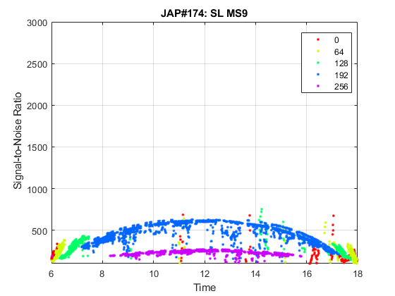 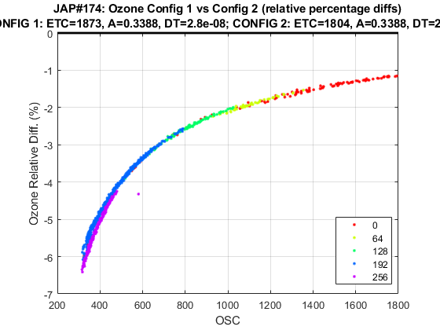
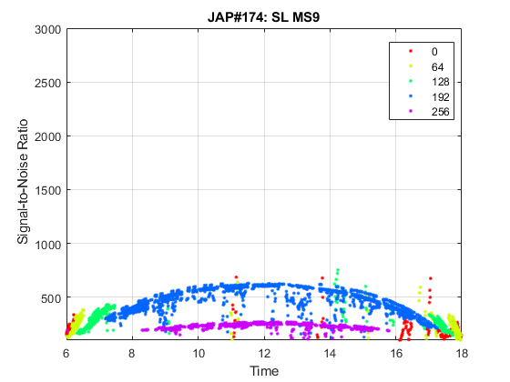 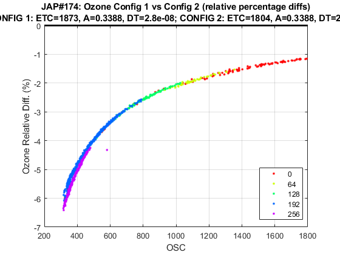 SL Report
close all; for ii=[Cal.n_ref,Cal.n_inst] sl_mov_o{ii}={}; sl_median_o{ii}={}; sl_out_o{ii}={}; R6_o{ii}={}; sl_mov_n{ii}={}; sl_median_n{ii}={}; sl_out_n{ii}={}; R6_n{ii}={}; try if ii==Cal.n_inst % old instrumental constants [sl_mov_o{ii},sl_median_o{ii},sl_out_o{ii},R6_o{ii}]=sl_report_jday(ii,sl,Cal.brw_str,... 'date_range',datenum(Cal.Date.cal_year,1,Cal.calibration_days{Cal.n_inst,1}([1 end])),... 'outlier_flag',0,'hgflag',1,'fplot',1); fprintf('%s Old constants: %5.0f +/-%5.1f\n',Cal.brw_name{ii},... nanmedian(R6_o{ii}(diajul(R6_o{ii}(:,1))>=Cal.calibration_days{ii,3}(1),2)),... nanstd( R6_o{ii}(diajul(R6_o{ii}(:,1))>=Cal.calibration_days{ii,3}(1),2))); % new instrumental constants [sl_mov_n{ii},sl_median_n{ii},sl_out_n{ii},R6_n{ii}]=sl_report_jday(ii,sl_cr,Cal.brw_str,... 'date_range',datenum(Cal.Date.cal_year,1,Cal.calibration_days{Cal.n_inst,1}([1 end])),... 'outlier_flag',0,'hgflag',1,'fplot',1); fprintf('%s New constants: %5.0f +/-%5.1f\n',Cal.brw_name{ii},... nanmedian(R6_n{ii}(diajul(R6_n{ii}(:,1))>=Cal.calibration_days{ii,3}(1),2)),... nanstd( R6_n{ii}(diajul(R6_n{ii}(:,1))>=Cal.calibration_days{ii,3}(1),2))); else [sl_mov_n{ii},sl_median_n{ii},sl_out_n{ii},R6_n{ii}]=sl_report_jday(ii,sl_cr,Cal.brw_str,... 'date_range',datenum(Cal.Date.cal_year,1,Cal.calibration_days{Cal.n_inst,1}([1 end])),... 'outlier_flag',0,'fplot',0); end catch exception fprintf('%s, brewer: %s\n',exception.message,Cal.brw_str{ii}); end end % anadimos el sl save(Cal.file_save,'-APPEND','sl_mov_o','sl_median_o','sl_out_o','R6_o',... 'sl_mov_n','sl_median_n','sl_out_n','R6_n'); sl_report{Cal.n_inst}.sl_mov_n=sl_mov_n{Cal.n_inst}; sl_report{Cal.n_inst}.sl_mov_o=sl_mov_o{Cal.n_inst}; sl_report{Cal.n_inst}.sl_median_n=sl_median_n{Cal.n_inst}; sl_report{Cal.n_inst}.sl_median_o=sl_median_o{Cal.n_inst}; sl_report{Cal.n_inst}.sl_out_n=sl_out_n{Cal.n_inst}; sl_report{Cal.n_inst}.sl_out_o=sl_out_o{Cal.n_inst}; sl_report{Cal.n_inst}.R6_n{Cal.n_inst}=R6_n{Cal.n_inst}; sl_report{Cal.n_inst}.R6_o{Cal.n_inst}=R6_o{Cal.n_inst}; save(Cal.file_save,'-APPEND','sl_report');
JAP#174 Old constants: 597 +/- 2.7 JAP#174 New constants: 597 +/- 2.7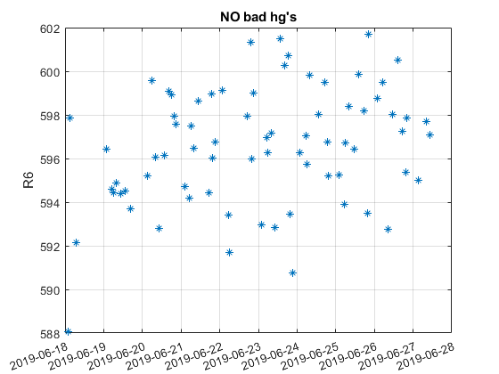 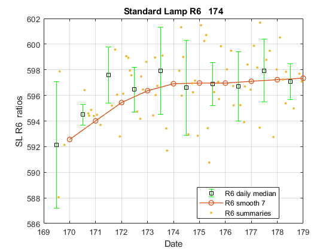 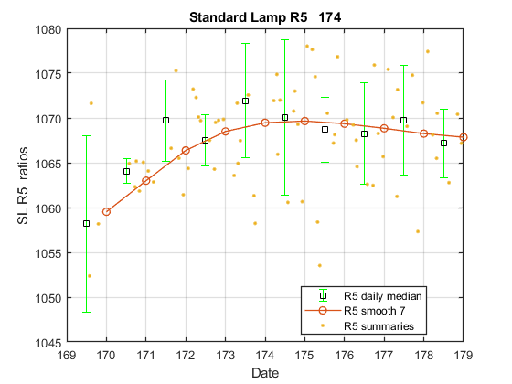 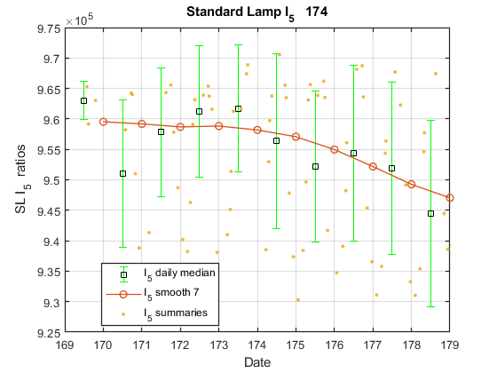 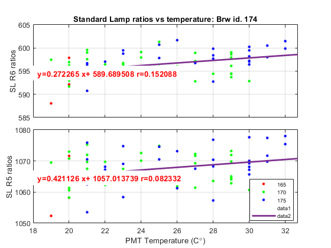 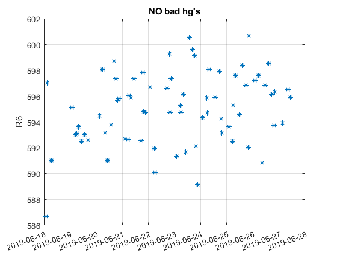 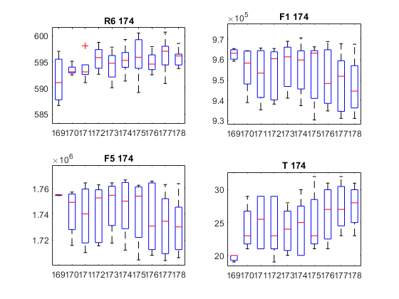 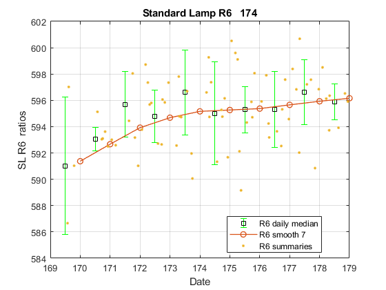 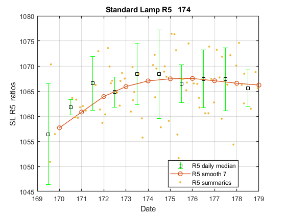 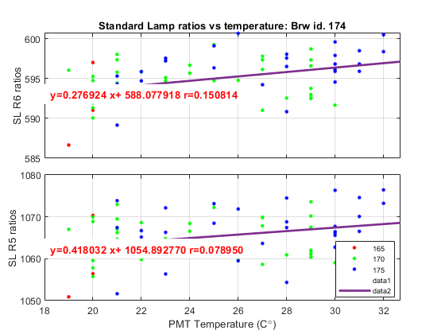
SL report plot
ix=sort(findobj('-regexp','Tag','SL_R\w+')); if length(ix)>2 for i=ix, set( findobj(i,'Tag','legend'),'FontSize',8); end set(ix(1),'tag','SL_R6_report_old'); set(ix(2),'tag','SL_R5_report_old'); Width=8; Height=6; else Width=14; Height=6.5; end printfiles_report(ix',Cal.dir_figs,'Width',Width,'Height',Height); figure(maxf(findobj('tag','SL_I5_report'))); printfiles_report(gcf,Cal.dir_figs,'LockAxes',0,'no_export'); close all
Hg Report
Hg failure
hg_fail=read_custom(fullfile(Cal.path_root,sprintf('bdata%s',Cal.brw_str{Cal.n_inst})),sprintf('B*.%s',Cal.brw_str{Cal.n_inst}),... 'hg: lamp not detected','printfile',0,... 'date_range',datenum(Cal.Date.cal_year,1,1)); if ~isempty(hg_fail) [mean_hg_fail N_hg_fail] = grpstats(fix(hg_fail),fix(hg_fail),{'nanmean','numel'}); displaytable( N_hg_fail,{'N(Hg failure)'},13,'d',cellstr(datestr(mean_hg_fail(:,1),1))) else fprintf('Ho Hg failures recorded for Brewer %s\r\n',Cal.brw_name{Cal.n_inst}); end % Hg during campaign hg_report(Cal.n_inst,hg,Cal,'outlier_flag',1,'date_range',[]);
| N(Hg failure) 27-Feb-2019 | 4 27-Mar-2019 | 3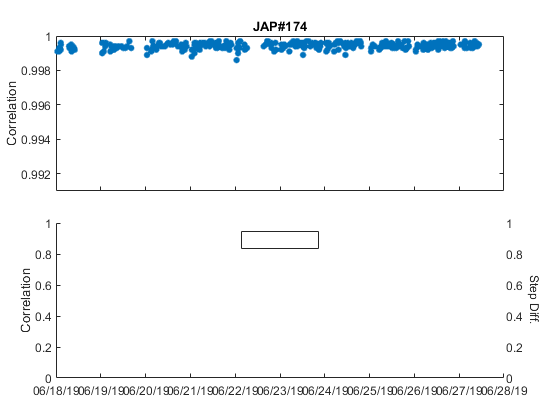 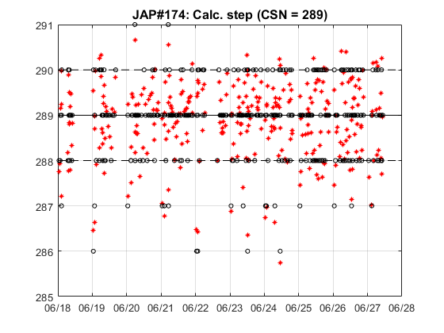 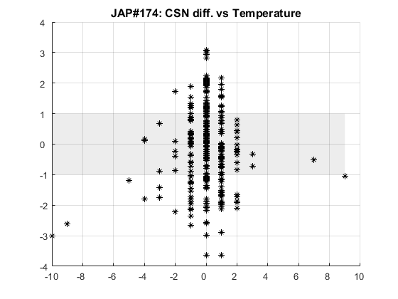

READ Configuration
close all [A,ETC,SL_B,SL_R,F_corr,cfg]=read_cal_config_new(config,Cal,{sl_median_o,sl_median_n}); try tabla_sl=printmatrix([Cal.brw(:)';ETC.old;ETC.new;A.old;A.new;Cal.SL_OLD_REF';Cal.SL_NEW_REF';fix(SL_B)']',4); cell2csv(fullfile(Cal.file_latex,'tabla_config.csv'),tabla_sl',';'); catch l=lasterror; disp(l.message) disp('tabla de configuracion posiblemente incompleta') end
Brewer TSK#005: 1ª config -> ICF15117.005 2ª config -> ICF17219.005 Index in position 1 is invalid. Array indices must be positive integers or logical values. File: read_cal_config_new, line: 99, brewer: al_report_174c instrumentAndRun File: evalmxdom, line: 112, brewer: ublish : File: ª, line: 115, brewer: File: IOS#017, line: No data. Continue Index in position 1 is invalid. Array indices must be positive integers or logical values. File: read_cal_config_new, line: 99, brewer: al_report_174c instrumentAndRun File: evalmxdom, line: 112, brewer: ublish : File: ª, line: 115, brewer: File: SCO#033, line: No data. Continue Index in position 1 is invalid. Array indices must be positive integers or logical values. File: read_cal_config_new, line: 99, brewer: al_report_174c instrumentAndRun File: evalmxdom, line: 112, brewer: ublish : File: ª, line: 115, brewer: File: MAD#070, line: No data. Continue Brewer UK_#075: 1ª config -> ICF15017.075 2ª config -> ICF17819.075 Index in position 1 is invalid. Array indices must be positive integers or logical values. File: read_cal_config_new, line: 99, brewer: al_report_174c instrumentAndRun File: evalmxdom, line: 112, brewer: ublish : File: ª, line: 115, brewer: File: MUR#117, line: No data. Continue Brewer UK_#126: 1ª config -> ICF15517.126 2ª config -> ICF17419.126 Index in position 1 is invalid. Array indices must be positive integers or logical values. File: read_cal_config_new, line: 99, brewer: al_report_174c instrumentAndRun File: evalmxdom, line: 112, brewer: ublish : File: ª, line: 115, brewer: File: ARE#150, line: No data. Continue Index in position 1 is invalid. Array indices must be positive integers or logical values. File: read_cal_config_new, line: 99, brewer: al_report_174c instrumentAndRun File: evalmxdom, line: 112, brewer: ublish : File: ª, line: 115, brewer: File: COR#151, line: No data. Continue Brewer K&Z#158: 1ª config -> ICF21218.158 2ª config -> ICF21218.158 Index in position 1 is invalid. Array indices must be positive integers or logical values. File: read_cal_config_new, line: 99, brewer: al_report_174c instrumentAndRun File: evalmxdom, line: 112, brewer: ublish : File: ª, line: 115, brewer: File: WRC#163, line: No data. Continue Index in position 1 is invalid. Array indices must be positive integers or logical values. File: read_cal_config_new, line: 99, brewer: al_report_174c instrumentAndRun File: evalmxdom, line: 112, brewer: ublish : File: ª, line: 115, brewer: File: ZAR#166, line: No data. Continue Brewer UK_#172: 1ª config -> ICF15117.172 2ª config -> ICF17819.172 Brewer JAP#174: 1ª config -> ICF20718.174 2ª config -> ICF17819.174 Brewer IZO#185: 1ª config -> CONFIG185.CFG (warning NaN replaced by 0 in 1 config)2ª config -> CONFIG185.CFG (warning NaN replaced by 0 in 2 config)IZO#185: estás corrigiendo SIEMPRE con las R6 -> 2º config Index in position 1 is invalid. Array indices must be positive integers or logical values. File: read_cal_config_new, line: 99, brewer: al_report_174c instrumentAndRun File: evalmxdom, line: 112, brewer: ublish : File: ª, line: 115, brewer: File: MAD#186, line: No data. Continue Index in position 1 is invalid. Array indices must be positive integers or logical values. File: read_cal_config_new, line: 99, brewer: al_report_174c instrumentAndRun File: evalmxdom, line: 112, brewer: ublish : File: ª, line: 115, brewer: File: CAN#190, line: No data. Continue Index in position 1 is invalid. Array indices must be positive integers or logical values. File: read_cal_config_new, line: 99, brewer: al_report_174c instrumentAndRun File: evalmxdom, line: 112, brewer: ublish : File: ª, line: 115, brewer: File: TAM#201, line: No data. Continue Index in position 1 is invalid. Array indices must be positive integers or logical values. File: read_cal_config_new, line: 99, brewer: al_report_174c instrumentAndRun File: evalmxdom, line: 112, brewer: ublish : File: ª, line: 115, brewer: File: DNK#202, line: No data. Continue Brewer DNK#228: 1ª config -> ICF15017.228 2ª config -> ICF17419.228 Undefined function 'fix' for input arguments of type 'struct'. tabla de configuracion posiblemente incompleta
Data recalculation for summaries and individual observations
for i=[Cal.n_inst Cal.n_ref] cal{i}={}; summary{i}={}; summary_old{i}={}; if i==Cal.n_inst [cal{i},summary{i},summary_old{i}]=test_recalculation(Cal,i,ozone_ds,A,SL_R,SL_B,'flag_sl',1,'hg_dep',0); else [cal{i},summary{i},summary_old{i}]=test_recalculation(Cal,i,ozone_ds,A,SL_R,SL_B,'flag_sl',1); end end %id_out=find(summary{Cal.n_inst}(:,6)>400 | summary{Cal.n_inst}(:,6)<200); %disp(unique(diaj(summary{Cal.n_inst}(id_out,1)))); %summary{Cal.n_inst}(id_out,:)=[]; summary_orig=summary; summary_orig_old=summary_old; save(Cal.file_save,'-APPEND','summary_old','summary_orig_old','summary','summary_orig');
Filter distribution
close all
ozone_filter_analysis_mi(summary,Cal);
'F#0 <-> F#1' 'F#1 <-> F#2' 'F#2 <-> F#3' 'F#3 <-> F#4'
[ 2] [ 1] [ 1] [ 65]
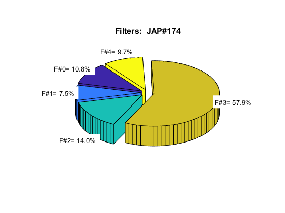 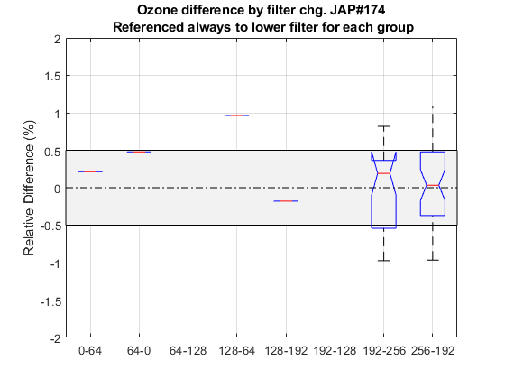 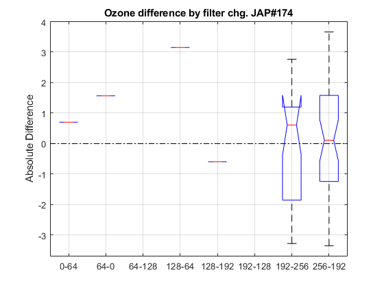 printfiles_report(findobj('Tag','FILTER_DISTRIBUTION'),Cal.dir_figs,'Width',13,'Height',7.5); printfiles_report(findobj('Tag','Ozone_diff_filter_rel'),Cal.dir_figs,'Width',13,'Height',7.5); close all
filter correction
Si queremos eliminar algun filtro CORREGIR a NaN
%F_corr{Cal.n_inst}=[0,0,0,13,0,0] for ii=[Cal.n_ref Cal.n_inst] [summary_old_corr summary_corr]=filter_corr(summary_orig,summary_orig_old,ii,A,F_corr{ii}); summary_old{ii}=summary_old_corr; summary{ii}=summary_corr; end figure; plot(summary{Cal.n_inst}(:,1),summary{Cal.n_inst}(:,6),'r.',... summary{Cal.n_ref(1)}(:,1),summary{Cal.n_ref(1)}(:,6),'k.');%,... % summary{Cal.n_ref(2)}(:,1),summary{Cal.n_ref(2)}(:,6),'m.'); legend(gca,'inst','IZO#185','Location','NorthEast'); grid; datetick('x',26,'KeepLimits','KeepTicks'); ozone_filter_analysis_mi(summary,Cal);
'F#0 <-> F#1' 'F#1 <-> F#2' 'F#2 <-> F#3' 'F#3 <-> F#4'
[ 2] [ 1] [ 1] [ 65]
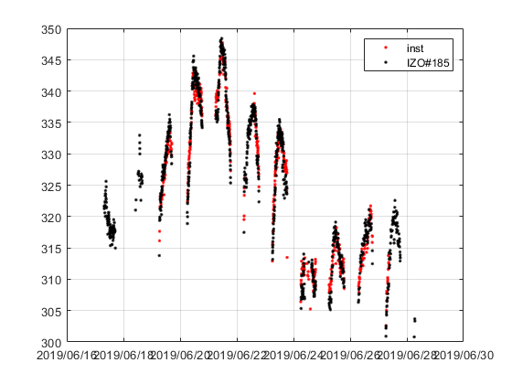 Ozone Calibration
Reference Brewer #185
close all n_ref=Cal.n_ref; % Cuidado con cual referencia estamos asignando n_inst=Cal.n_inst; brw=Cal.brw; brw_str=Cal.brw_str; jday_ref=findm((diaj(summary{n_ref}(:,1))),Cal.calibration_days{n_inst,1},0.5); ref=summary{n_ref}(jday_ref,:);
Change? No change
alldays=Cal.calibration_days{Cal.n_inst,1};
jday=findm(diaj(summary_orig_old{Cal.n_inst}(:,1)),alldays,0.5);% quiero mostrar la primera config. con sl
inst1=summary_orig_old{Cal.n_inst}(jday,:);
[x,r,rp,ra,dat,ox,osc_smooth_ini]=ratio_min_ozone(...
inst1(:,[1,6,3,2,8,9,4,5]),ref(:,[1,6,3,2,8,9,4,5]),...
5,brw_str{n_inst},brw_str{n_ref},'plot_flag',0);% original config
Por defecto, LIM=2.5 (en boxparams)
0.9595
24.0775
0.8032
0.9248
13.1906
0.9941
34.9644
--------- Validation OK --------------
List of arguments given default values:
'OSC_lim' defaults to 250 1900
--------------------------------------
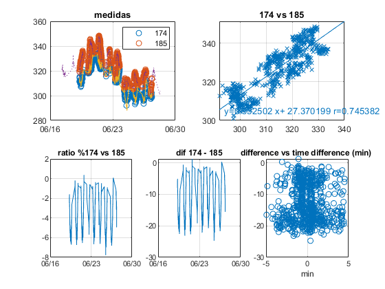 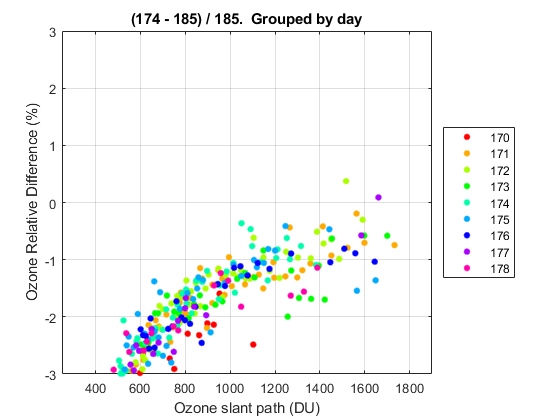 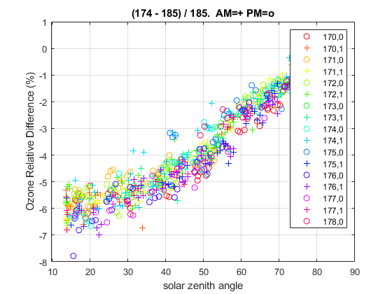 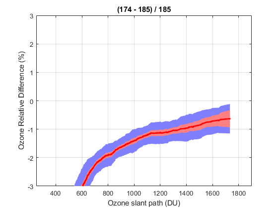 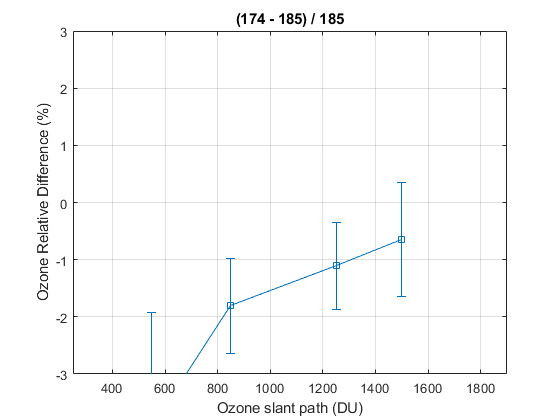 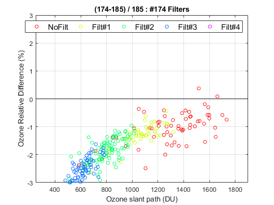 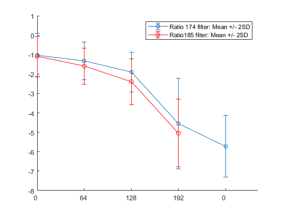 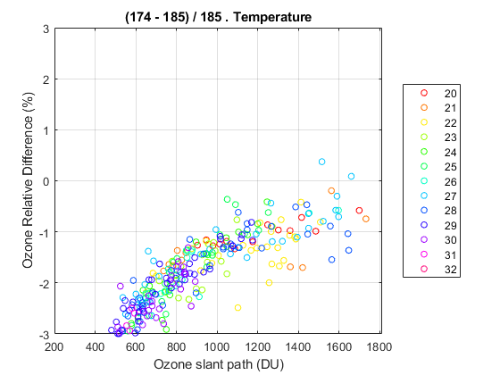 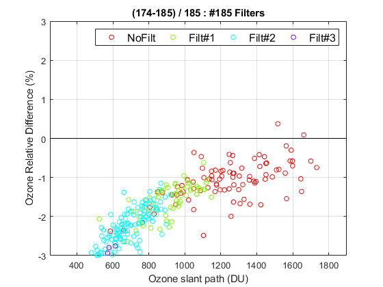 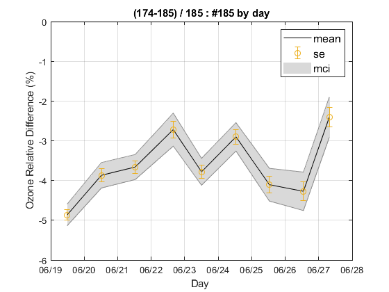 Blind Period
etiquetamos con _b, porque eso sera lo que usamos para plotear los individu~ales, con la configuraci?n sugerida
close all blinddays=Cal.calibration_days{Cal.n_inst,2}; jday=findm(diaj(summary_orig_old{Cal.n_inst}(:,1)),blinddays,0.5); inst1_b=summary_orig_old{Cal.n_inst}(jday,:); if Cal.no_maint(Cal.n_inst) % if the instrument has changed due to maintenance
[x,r,rp,ra,dat,ox,osc_smooth_ini]=ratio_min_ozone(... inst1_b(:,[1,6,3,2,8,9,4,5]),ref(:,[1,6,3,2,8,9,4,5]),... 5,brw_str{n_inst},brw_str{n_ref},'plot_flag',0);% original config [x,r,rp,ra,dat,ox,osc_smooth_inisl]=ratio_min_ozone(... inst1_b(:,[1,12,3,2,8,9,4,5]),ref(:,[1,6,3,2,8,9,4,5]),... 5,brw_str{n_inst},brw_str{n_ref},'plot_flag',0);% original config , sl corrected
Por defecto, LIM=2.5 (en boxparams)
0.9595
24.0775
0.8032
0.9248
13.1906
0.9941
34.9644
--------- Validation OK --------------
List of arguments given default values:
'OSC_lim' defaults to 250 1900
--------------------------------------
Por defecto, LIM=2.5 (en boxparams)
0.9864
14.0271
0.8444
0.9556
4.2726
1.0173
23.7815
--------- Validation OK --------------
List of arguments given default values:
'OSC_lim' defaults to 250 1900
--------------------------------------
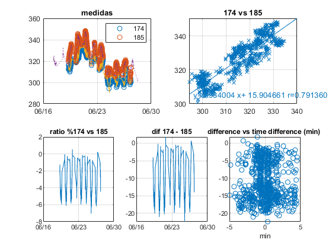 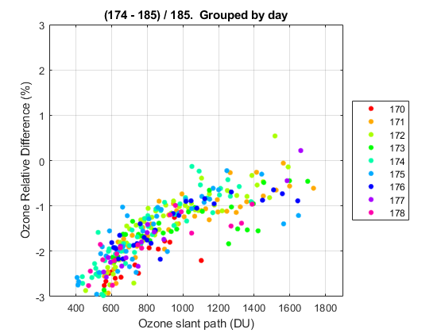 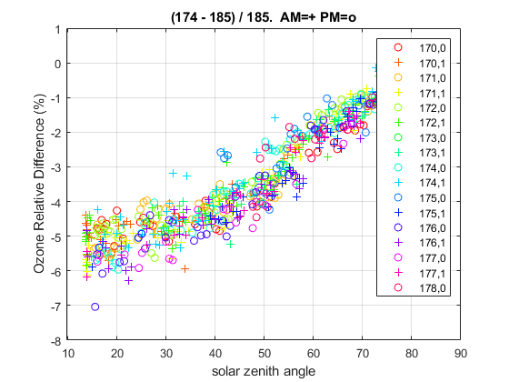 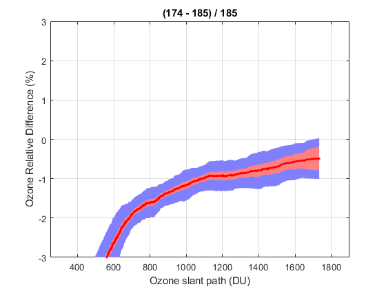 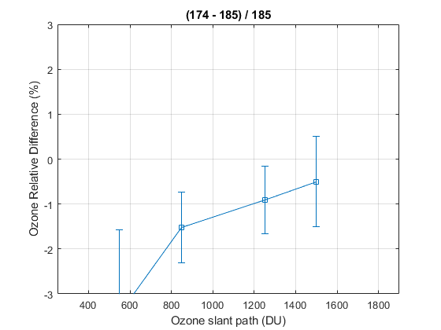 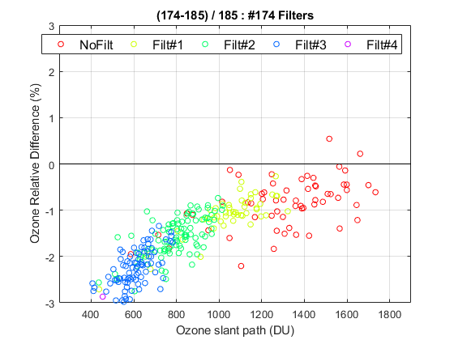  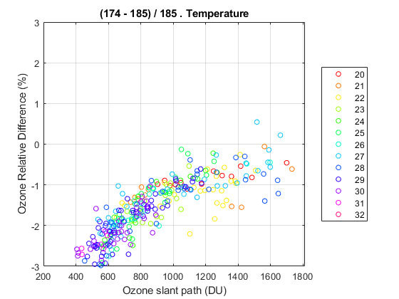 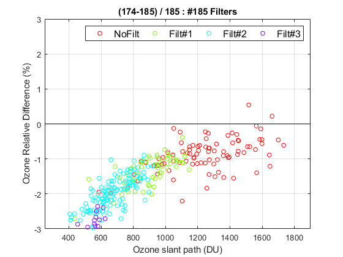 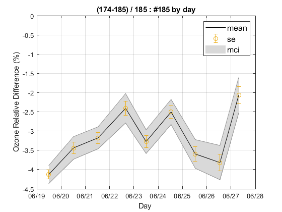
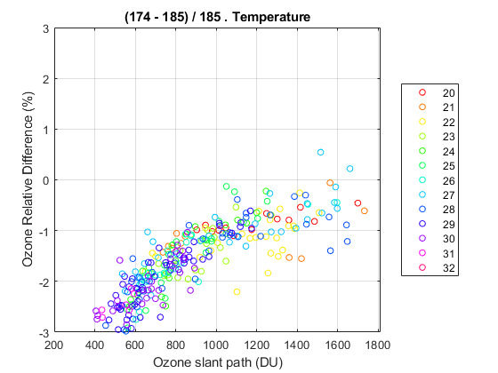 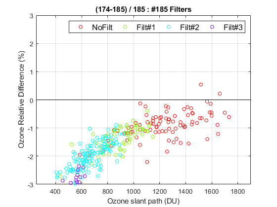 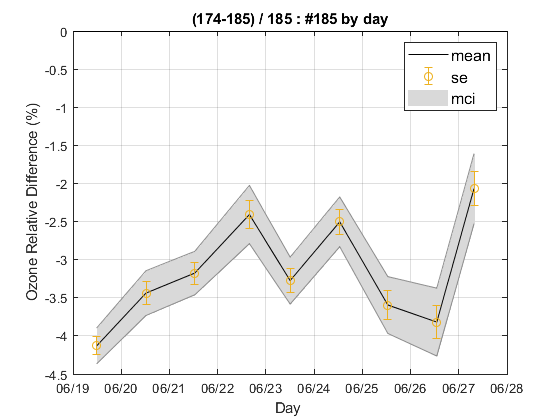 Sugerido con los blind_days
A1=A.old(ismember(Cal.Date.CALC_DAYS,blinddays),Cal.n_inst+1); A1_old=unique(A1(~isnan(A1)))
osc_range=0.9
%A1_old=0.3390
[ETC_SUG,o3c_SUG,m_etc_SUG]=ETC_calibration_C(Cal,summary_old,A1_old,...
Cal.n_inst,n_ref,5,osc_range,0.01,blinddays);
data_tabl=[nanmean(ETC.old(:,n_inst+1)),round([ETC_SUG(1).NEW,ETC_SUG(1).TP(1)]),...
nanmean(A.old(:,n_inst+1)),ETC_SUG(1).TP(2)/10000,A1_old
% solo el rango seleccionado
nanmean(ETC.old(:,n_inst+1)),round([ETC_SUG(2).NEW,ETC_SUG(2).TP(1)]),...
nanmean(A.old(:,n_inst+1)),ETC_SUG(2).TP(2)/10000,A1_old];
% todo el rango
displaytable(data_tabl,{'ETCorig','ETCnew 1p','ETCnew 2p','O3Abs (ICF)','O3Abs 2p','O3Abs sug.'},...
11,{'d','d','d','.4f','.4f','.4f'},{sprintf('OSC < %.2f DU',osc_range),'All OSC range'})
% suggested
o3r= (inst1_b(:,8)-ETC_SUG(1).NEW)./(A1_old*inst1_b(:,3)*10);
inst1_b(:,10)=o3r;
[x,r,rp,ra,dat,ox,osc_smooth_sug]=ratio_min_ozone(...
inst1_b(:,[1,10,3,2,8,9,4,5]),ref(:,[1,6,3,2,8,9,4,5]),...
5,brw_str{n_inst},brw_str{n_ref},'plot_flag',0);
% si es suficiente la correccion por sl
% osc_smooth_sug=osc_smooth_inisl;
A1_old =
0.3388
osc_range =
0.9000
Error using statrobustfit (line 21)
Not enough points to perform robust estimation.
| ETCorig | ETCnew 1p | ETCnew 2p | O3Abs (ICF) | O3Abs 2p | O3Abs sug.
OSC < 0.90 DU | 1873 | 1813 | 1799 | 0.3388 | 0.3419 | 0.3388
All OSC range | 1873 | 1812 | 1800 | 0.3388 | 0.3417 | 0.3388
Por defecto, LIM=2.5 (en boxparams)
1.0119
-3.9816
0.9825
1.0020
-7.1942
1.0217
-0.7691
--------- Validation OK --------------
List of arguments given default values:
'OSC_lim' defaults to 250 1900
--------------------------------------
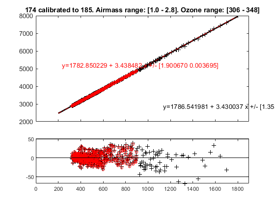 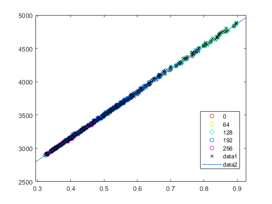 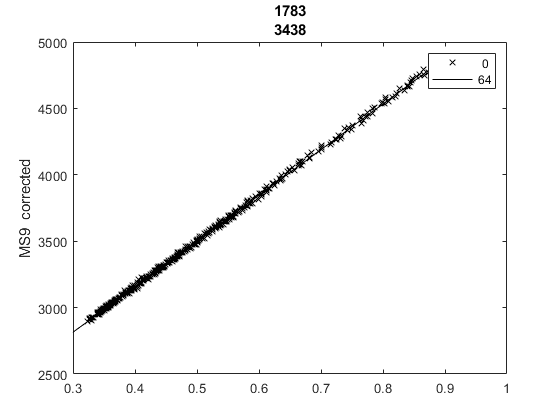 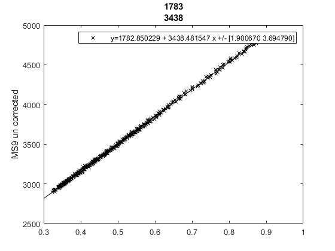 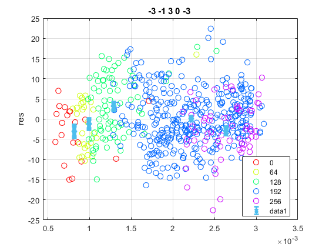 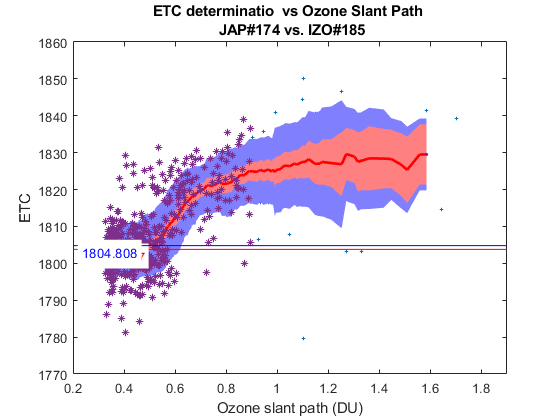 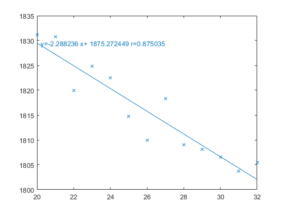 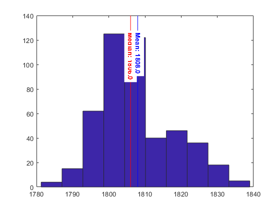 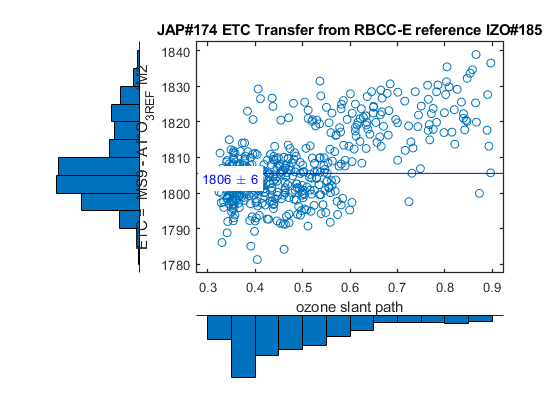 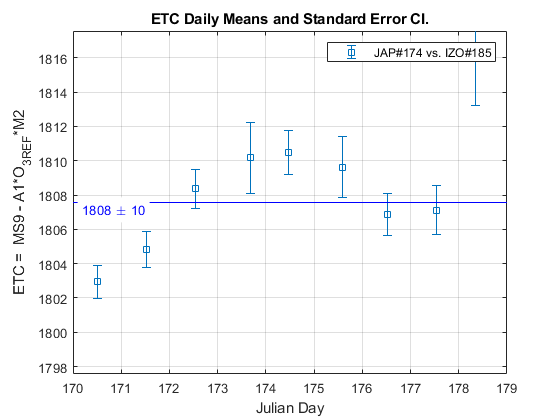 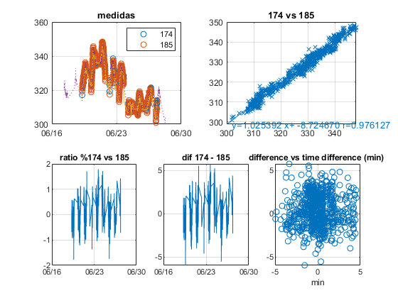 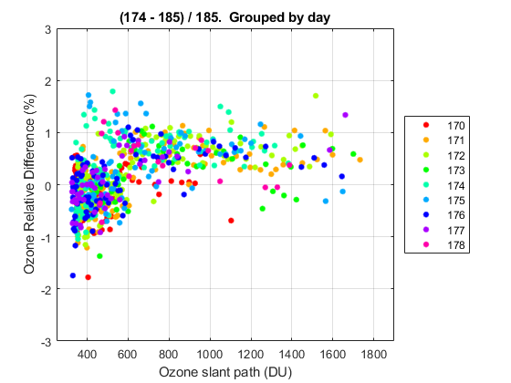 figure(sort(findobj('tag','CAL_2P_SCHIST'))); ax=findobj(gca,'type','text'); set(ax(2),'FontSize',9,'Backgroundcolor','w'); set(ax(3),'FontSize',9,'Backgroundcolor','w'); printfiles_report(gcf,Cal.dir_figs,'aux_pattern',{'sug'},'Width',14,'Height',8); figure; set(gcf,'tag','RATIO_ERRORBAR'); h=plot_smooth(osc_smooth_ini,osc_smooth_inisl,osc_smooth_sug); legend(h,'Config. orig','Config. orig, SL corrected','Suggested'); title([ brw_str{n_inst},' - ',brw_str{n_ref},' / ',brw_str{n_ref}]); printfiles_report(gcf,Cal.dir_figs,'aux_pattern',{'sug'});

close all
Blind days table
m_etc: [date, ref_new_slcorr, +sd, +n, ... inst(6), +sd, inst(10), +sd, inst(6 sl corr), +sd, ... inst(rcalibrated, ETC sug), +sd]
Si no hay sugerida, sino que es la orig.SL corr., hacer
%m_etc=[m_etc_SUG(:,1:6),NaN*m_etc_SUG(:,1),m_etc_SUG(:,9:10)]; m_etc=[m_etc_SUG(:,1:6),NaN*m_etc_SUG(:,1),m_etc_SUG(:,11:12)]; m_etc(:,7)=100*(m_etc(:,5)-m_etc(:,2))./m_etc(:,2); m_etc(:,10)=100*(m_etc(:,8)-m_etc(:,2))./m_etc(:,2); M=cell(size(m_etc,1)+1,size(m_etc,2)+1); label={'Date','Day',['O3\#',brw_str{n_ref}],'O3std','N',... ['O3\#',brw_str{n_inst}],'O3 std',... ['\%(',brw_str{n_inst},'-',brw_str{n_ref},')/',brw_str{n_ref}]...% old config ['O3(*)\#',brw_str{n_inst}],'O3std',...% new config., no SL corrected ['(*)\%(',brw_str{n_inst},'-',brw_str{n_ref},')/',brw_str{n_ref}]}; M(1,:)=label; M(2:end,1)=cellstr(datestr(fix(m_etc(:,1)))); m_etc(:,1)=diaj(m_etc(:,1)); M(2:end,2:end)=num2cell(round(m_etc*10)/10); disp(M); matrix2latex_ctable(M(2:end,2:end),fullfile(Cal.file_latex,['table_ETCdatasug_',Cal.brw_str{Cal.n_inst},'.tex']),... 'rowlabels',M(2:end,1),... 'columnlabels',label(2:end),'alignment','c','resize',0.9); % Sergio: A�adido para los report en latex %Info: % m_etc(1,1)=d�a inicial que se emplea para la sugerida % m_etc(:,1)=d�a final que se emplea para la sugerida % total= n�mero total de medidas total_sugerida=sum(m_etc(:,4)) latexcmd(fullfile(Cal.file_latex,['cal_status_',brw_str{n_inst}]),'\diaSUGstart',m_etc(1,1),... '\diaSUGend',m_etc(end,1),'\totalSUG',total_sugerida);
Columns 1 through 6
'Date' 'Day' 'O3\#185' 'O3std' 'N' 'O3\#174'
'19-Jun-2019' [170] [328.9000] [3.3000] [58] [312.8000]
'20-Jun-2019' [171] [337.8000] [4.3000] [80] [323.1000]
'21-Jun-2019' [172] [339.2000] [4.4000] [84] [ 326]
'22-Jun-2019' [173] [ 333] [2.8000] [30] [321.6000]
'23-Jun-2019' [174] [327.6000] [4.1000] [76] [314.2000]
'24-Jun-2019' [175] [310.1000] [1.4000] [39] [298.8000]
'25-Jun-2019' [176] [312.2000] [2.8000] [54] [299.1000]
'26-Jun-2019' [177] [315.3000] [3.6000] [43] [302.1000]
'27-Jun-2019' [178] [309.6000] [1.9000] [11] [299.8000]
Columns 7 through 10
'O3 std' '\%(174-185)/185' 'O3(*)\#174' 'O3std'
[3.4000] [ -4.9000] [ 327.4000] [3.3000]
[3.4000] [ -4.4000] [ 336.4000] [3.8000]
[2.7000] [ -3.9000] [ 338.6000] [ 4]
[1.1000] [ -3.4000] [ 332.3000] [ 2]
[1.4000] [ -4.1000] [ 327.1000] [3.2000]
[2.1000] [ -3.6000] [ 309.5000] [1.1000]
[2.4000] [ -4.2000] [ 311.4000] [2.2000]
[5.6000] [ -4.2000] [ 314.4000] [3.9000]
[ 1] [ -3.2000] [ 309.6000] [1.6000]
Column 11
'(*)\%(174-185)/185'
[ -0.5000]
[ -0.4000]
[ -0.2000]
[ -0.2000]
[ -0.2000]
[ -0.2000]
[ -0.3000]
[ -0.3000]
[ 0]
total_sugerida =
475
else disp('No maintenance') ETC_SUG(1).NEW=NaN; o3c_SUG=NaN; osc_smooth_sug=NaN*ones(1,7); [x,r,rp,ra,dat,ox,osc_smooth_ini]=ratio_min_ozone(... inst1_b(:,[1,6,3,2,8,9,4,5]),ref(:,[1,6,3,2,8,9,4,5]),... 5,brw_str{n_ref},brw_str{n_ref},'plot_flag',0);% original config [x,r,rp,ra,dat,ox,osc_smooth_inisl]=ratio_min_ozone(... inst1_b(:,[1,12,3,2,8,9,4,5]),ref(:,[1,6,3,2,8,9,4,5]),... 5,brw_str{n_ref},brw_str{n_ref},'plot_flag',0);% original config with SL correction osc_smooth{Cal.n_inst}.ini=osc_smooth_ini; osc_smooth{Cal.n_inst}.ini_sl=osc_smooth_inisl; A1=A.old(ismember(Cal.Date.CALC_DAYS,blinddays),Cal.n_inst+1); A1_old=unique(A1(~isnan(A1))); end latexcmd(fullfile(Cal.file_latex,['cal_etc_',brw_str{n_inst}]),'\ETCblind',num2str(round(ETC_SUG(1).NEW)),... '\ETCSOblind',config_def(12),'\SOABSblind',config_def(10),'\OtresSOABSblind',config_def(9),... '\NobsCalblind',size(o3c_SUG,1)); etc{Cal.n_inst}.sug=ETC_SUG; osc_smooth{Cal.n_inst}.ini=osc_smooth_ini; osc_smooth{Cal.n_inst}.ini_sl=osc_smooth_inisl; osc_smooth{Cal.n_inst}.sug=osc_smooth_sug; save(Cal.file_save,'-APPEND','etc');
Final Period
close all finaldays=Cal.calibration_days{Cal.n_inst,3}; jday=ismember(diaj(summary{Cal.n_inst}(:,1)),fix(finaldays)); jlim=(diaj2(summary{Cal.n_inst}(:,1))>finaldays(1) & ... % 2st set the limits diaj2(summary{Cal.n_inst}(:,1))<finaldays(end)); inst2=summary{Cal.n_inst}(jday & jlim ,:);
A1=A.new(ismember(Cal.Date.CALC_DAYS,finaldays),Cal.n_inst+1); A1_new=unique(A1(~isnan(A1))) osc_range=0.7; %A1_new=0.3431 [ETC_NEW,o3c_NEW,m_etc_NEW]=ETC_calibration_C(Cal,summary,A1_new,n_inst,n_ref,... 10,osc_range,0.03,finaldays); hidx=ismember(Cal.Date.CALC_DAYS,finaldays); cc=nanmean([ETC.new(hidx,Cal.n_inst+1),10000*A.new(hidx,Cal.n_inst+1),10000*A.old(hidx,Cal.n_inst+1)]); tableform({'ETCorig','ETCnew 1p','ETCnew 2p','O3Abs (ICF)','O3Abs 2p','O3Abs old'},... [round([cc(1),ETC_NEW(1).NEW,ETC_NEW(1).TP(1), cc(3),ETC_NEW(1).TP(2),cc(2)]) % solo el rango seleccionado round([cc(1),ETC_NEW(2).NEW,ETC_NEW(2).TP(1), cc(3),ETC_NEW(2).TP(2),cc(3)])]); % todo el rango latexcmd(fullfile(['>',Cal.file_latex],['cal_etc_',brw_str{n_inst}]),'\ETCfin',num2str(round(ETC_NEW(1).NEW)),... '\ETCSOfin',config_def(12),'\SOABSfin',config_def(10),'\OtresSOABSfin',config_def(9),... '\NobsCalfin',size(o3c_NEW,1)); etc{Cal.n_inst}.new=ETC_NEW; save(Cal.file_save,'-APPEND','etc');
A1_new =
0.3388
Error using statrobustfit (line 21)
Not enough points to perform robust estimation.
Columns 1 through 5
'ETCorig' 'ETCnew 1p' 'ETCnew 2p' 'O3Abs (ICF)' 'O3Abs 2p'
[ 1812] [ 1813] [ 1801] [ 3388] [ 3413]
[ 1812] [ 1812] [ 1800] [ 3388] [ 3416]
Column 6
'O3Abs old'
[ 3388]
[ 3388]


TEST NEW CONFIG
o3r= (inst2(:,8)-ETC_NEW(1).NEW)./(A1_new*inst2(:,3)*10);
inst2(:,10)=o3r;
[x,r,rp,ra,dat,ox,osc_smooth_fin]=ratio_min_ozone(...
inst2(:,[1,10,3,2,8,9,4,5]),ref(:,[1,6,3,2,8,9,4,5]),...
5,brw_str{n_inst},brw_str{n_ref},'plot_flag',0);
Por defecto, LIM=2.5 (en boxparams)
1.0109
-3.7907
0.9829
1.0012
-6.9595
1.0206
-0.6220
--------- Validation OK --------------
List of arguments given default values:
'OSC_lim' defaults to 250 1900
--------------------------------------

FINAL CONFIG
[x,r,rp,ra,dat,ox,osc_smooth_fin]=ratio_min_ozone(... inst2(:,[1,6,3,2,8,9,4,5]),ref(:,[1,6,3,2,8,9,4,5]),... 5,brw_str{n_inst},brw_str{n_ref},'plot_flag',0); figure; set(gcf,'tag','RATIO_ERRORBAR_all'); h=plot_smooth(osc_smooth_ini,osc_smooth_inisl,osc_smooth_fin); legend(h,'Config. orig','Config. orig, SL corrected','Suggested'); set(gca,'YLim',[-4 2]); title([ brw_str{n_inst},' - ',brw_str{n_ref},' / ',brw_str{n_ref}]);
Por defecto, LIM=2.5 (en boxparams)
1.0100
-3.6086
0.9833
1.0004
-6.7385
1.0196
-0.4788
--------- Validation OK --------------
List of arguments given default values:
'OSC_lim' defaults to 250 1900
--------------------------------------

TWO POINT CALIBRATION
o3r= (inst2(:,8)-ETC_NEW(1).TP(1))./(ETC_NEW(1).TP(2)/10000*inst2(:,3)*10);
inst2(:,10)=o3r;
[x,r,rp,ra,dat,ox,osc_smooth_2P]=ratio_min_ozone(...
inst2(:,[1,10,3,2,8,9,4,5]),ref(:,[1,6,3,2,8,9,4,5]),...
5,brw_str{n_inst},brw_str{n_ref},'plot_flag',0);osc_smooth{Cal.n_inst}.fin=osc_smooth_fin;
% osc_smooth{Cal.n_inst}.twoP=osc_smooth_2P;
save(Cal.file_save,'-APPEND','osc_smooth');
figure(sort(findobj('tag','CAL_2P_SCHIST'))); ax=findobj(gca,'type','text'); set(ax(2),'FontSize',9,'Backgroundcolor','w'); set(ax(3),'FontSize',9,'Backgroundcolor','w'); printfiles_report(gcf,Cal.dir_figs,'aux_pattern',{'fin'},'Width',14,'Height',8); figure(maxf(findobj('tag','RATIO_ERRORBAR'))); printfiles_report(gcf,Cal.dir_figs,'aux_pattern',{'fin'}); figure(findobj('tag','RATIO_ERRORBAR_all')); printfiles_report(gcf,Cal.dir_figs); close all
STRAY
if Cal.brwM(Cal.n_inst)~=3
close all osc_range=2; [ETC_NEWo,o3c_NEWo,m_etc_NEW]=ETC_calibration_C(Cal,summary,A1_new,n_inst,n_ref,... 10,osc_range,0.05,finaldays); close all; straylight_{n_inst}=straylight_model(o3c_NEWo,A1_new,ETC_NEW(1).NEW,Cal); save(Cal.file_save,'-APPEND','straylight_');
figure(maxf(findobj('-regexp','tag','ETC_StrayLight*'))); % ax=findobj(gca,'type','text'); % set(ax,'FontSize',12,'Backgroundcolor','w'); %set(ax(3),'FontSize',9,'Backgroundcolor','w'); printfiles_report(gcf,Cal.dir_figs,'aux_pattern',{'_Det'},... 'Width',14,'Height',8,'FontSize',10);
Latex variables
a=straylight_{n_inst}.coeff.R(1);
b=straylight_{n_inst}.coeff.R(2);
sl_etc=straylight_{n_inst}.coeff.R(3);
latexcmd(fullfile(['>',Cal.file_latex],['cal_etc_',brw_str{n_inst}]),...
'\SLETC',round(sl_etc),'\SLexp',round(b*100)/100,'\SLcoeff',round(a*10)/10);
calculation
a=straylight_{n_inst}.coeff.R(1);
b=straylight_{n_inst}.coeff.R(2);
sl_etc=straylight_{n_inst}.coeff.R(3);
etc=ETC_NEW(1).NEW
o3=inst2(:,6);
m =inst2(:,3);
o3r= o3 - a/A1_new*(m.*o3/1000).^b./m/10;
%o3r1= o3 - a/A1_new*(m.*o3r).^b./m/10;
inst2(:,10)=o3r;
[x,r,rp,ra,dat,ox,osc_stray]=ratio_min_ozone(...
inst2(:,[1,10,3,2,8,9,4,5]),ref(:,[1,6,3,2,8,9,4,5]),...
5,brw_str{n_inst},brw_str{n_inst},'plot_flag',0);
o3r1= o3 - a/A1_new*(m.*o3r/1000).^b./m/10;
inst2(:,10)=o3r1;
[x,r,rp,ra,dat,ox,osc_stray2]=ratio_min_ozone(...
inst2(:,[1,10,3,2,8,9,4,5]),ref(:,[1,6,3,2,8,9,4,5]),...
5,brw_str{n_inst},brw_str{n_inst},'plot_flag',0);
Apply the SL correction
f=figure;
set(f,'tag','RATIO_ERRORBAR_stray');
h=plot_smooth_(osc_smooth_inisl,osc_smooth_fin,osc_stray2);
legend(h,'Config. initial (SL corrected)','Final Configuration','Stray Light corrected ',...
'location','southwest');
set(gca,'YLim',[-4 2]);
title([ brw_str{n_inst},' - ',brw_str{n_ref},' / ',brw_str{n_ref}]);
figure(maxf(findobj('-regexp','tag','RATIO_ERRORBAR_stray')));
printfiles_report(gcf,Cal.dir_figs,...
'Width',14,'Height',8);
Difference iter#1 to iter#2
f=figure;
set(f,'tag','RATIO_ERRORBAR_stray_corr');
h=plot_smooth_(osc_smooth_fin,osc_stray,osc_stray2);
legend(h,'Config.final','Stray Light corrected Iter #1','Stray Light corrected Iter #2',...
'location','southwest');
set(gca,'YLim',[-4 2]);
title([ brw_str{n_inst},' - ',brw_str{n_ref},' / ',brw_str{n_ref}]);
f=figure;
figure(maxf(findobj('-regexp','tag','RATIO_ERRORBAR_stray_corr')));
printfiles_report(gcf,Cal.dir_figs,...
'Width',14,'Height',8);
end
Final days table
m_etc_(lo que sea) son los datos filtrados por Tsync, OSC y sza !!! -> salida de ETC_calibration En ste caso se usa summary, as? que la configuraci?n original ser? 10, y la final 6
m_etc=[m_etc_NEW(:,[1:4 7:8]),NaN*m_etc_NEW(:,1),m_etc_NEW(:,5:6)]; m_etc(:,7)=100*(m_etc(:,5)-m_etc(:,2))./m_etc(:,2); m_etc(:,10)=100*(m_etc(:,8)-m_etc(:,2))./m_etc(:,2); % La diferencia relativa anterior se refiere al ozono recalculado con la ETC que resulta de los c?lculos % Esto podr?a ser una incoherencia: por ejemplo para el 072 sale 3179, pero mantenemos 3185. %m_etc(:,[end-1,end])=[]; M=cell(size(m_etc,1)+1,size(m_etc,2)+1); label={'Date','Day',['O3\#',brw_str{n_ref}],'O3std','N',... ['O3\#',brw_str{n_inst}],'O3 std',... ['\%(',brw_str{n_inst},'-',brw_str{n_ref},')/',brw_str{n_ref}]... ['O3(*)\#',brw_str{n_inst}],'O3std',... ['(*)\%(',brw_str{n_inst},'-',brw_str{n_ref},')/',brw_str{n_ref}]}; M(1,:)=label; M(2:end,1)=cellstr(datestr(fix(m_etc(:,1)))); m_etc(:,1)=diaj(m_etc(:,1)); M(2:end,2:end)=num2cell(round(m_etc*10)/10); disp(M); matrix2latex_ctable(M(2:end,2:end),fullfile(Cal.file_latex,['table_ETCdatafin_',Cal.brw_str{Cal.n_inst},'.tex']),... 'rowlabels',M(2:end,1),... 'columnlabels',label(2:end),'alignment','c','resize',0.9) % So2 calibration from icf file % Pendiente % latexcmd(['>',file_latex,'_etc_',brw_str{n_inst}],'\ETCSOdos',config_def(12),'\SOdosABS',config_def(10),'\OtresSOdosABS',config_def(9));
Columns 1 through 6
'Date' 'Day' 'O3\#185' 'O3std' 'N' 'O3\#174'
'19-Jun-2019' [170] [329.2000] [3.4000] [64] [312.6000]
'20-Jun-2019' [171] [338.4000] [4.3000] [76] [322.8000]
'21-Jun-2019' [172] [340.4000] [4.3000] [75] [325.7000]
'22-Jun-2019' [173] [334.2000] [2.5000] [28] [321.4000]
'23-Jun-2019' [174] [328.8000] [3.3000] [71] [314.3000]
'24-Jun-2019' [175] [310.5000] [1.4000] [46] [298.5000]
'25-Jun-2019' [176] [313.1000] [2.8000] [48] [298.6000]
'26-Jun-2019' [177] [316.1000] [2.9000] [42] [301.1000]
'27-Jun-2019' [178] [310.2000] [1.9000] [10] [299.8000]
Columns 7 through 10
'O3 std' '\%(174-185)/185' 'O3(*)\#174' 'O3std'
[3.3000] [ -5] [ 327.5000] [3.5000]
[2.9000] [ -4.6000] [ 336.7000] [3.8000]
[2.5000] [ -4.3000] [ 339.4000] [ 4]
[ 1] [ -3.8000] [ 333.2000] [ 2]
[1.5000] [ -4.4000] [ 328.1000] [2.5000]
[1.8000] [ -3.9000] [ 309.8000] [ 1]
[1.9000] [ -4.6000] [ 312.1000] [2.1000]
[5.2000] [ -4.7000] [ 314.7000] [3.4000]
[ 1] [ -3.4000] [ 310.1000] [1.4000]
Column 11
'(*)\%(174-185)/185'
[ -0.5000]
[ -0.5000]
[ -0.3000]
[ -0.3000]
[ -0.2000]
[ -0.2000]
[ -0.3000]
[ -0.4000]
[ 0]
Summary Final Comparison all data detailed for osc ranges
TIME_SYNC=5; %rowlabels=regexprep(str_leg, '#', '\#'); caption=strcat('Ozone Summary Report. Mean daily ozone, grouped by ozone slant path ranges,',... ' with original and final configuration (with an asterisk)'); tags_={'osc$>$1500' '1500$>$osc$>$1000' '1000$>$osc$>$700' '700$>$osc$>$400' 'osc$<$400'}; label_={'Day','osc range',['O3#',brw_str{n_ref}],'O3std','N',... ['O3#',brw_str{n_inst}],'O3 std','%diff',... ['(*)O3#',brw_str{n_inst}],'O3 std','(*)%diff'}; ozone_osc_sum=o3_daily_osc(Cal,TIME_SYNC,n_ref,ETC_SUG,A1_old,summary_orig_old,summary_old,summary); dat=cat(2,num2cell(ozone_osc_sum(:,1)),tags_(ozone_osc_sum(:,end))',num2cell(ozone_osc_sum(:,2:end-1))); displaytable(dat,label_,12); matrix2latex_longtable(dat,fullfile(Cal.file_latex,['table_summarydetailed_',brw_str{n_inst},'.tex']),... 'size','tiny','columnlabels',str2latex(label_),'alignment','c',... 'format',{'%.0f','%s','%.0f','%.1f','%.0f','%.0f','%.1f','%.1f','%.0f','%.1f','%.1f'},... 'caption',caption);
Day | osc range | O3#185 | O3std | N | O3#174 | O3 std | %diff | (*)O3#174 | O3 std | (*)%diff
170 | 1500$>$osc$> | 319.4 | 0 | 1 | 312.3 | 0 | -2.2 | 316.6 | 0 | -0.9
170 | 1000$>$osc$> | 322.3 | 1 | 3 | 315.8 | 0.5 | -2 | 321.7 | 0.9 | -0.2
170 | 700$>$osc$>$ | 327 | 4.3 | 23 | 316.2 | 4.1 | -3.3 | 326.1 | 4.4 | -0.3
170 | osc$<$400 | 328.5 | 2.6 | 36 | 314.6 | 2.4 | -4.2 | 328.4 | 2.3 | -0
171 | osc$>$1500 | 324.1 | 9 | 3 | 323.1 | 7.9 | -0.3 | 326.4 | 8 | 0.7
171 | 1500$>$osc$> | 328.7 | 6.4 | 12 | 325.6 | 6.6 | -1 | 329.8 | 6.7 | 0.3
171 | 1000$>$osc$> | 331.4 | 6 | 22 | 326.5 | 6 | -1.5 | 332.8 | 6 | 0.4
171 | 700$>$osc$>$ | 335 | 4.1 | 46 | 324.2 | 3.6 | -3.2 | 334.8 | 3.8 | -0
171 | osc$<$400 | 340.1 | 1.3 | 30 | 324.8 | 1.4 | -4.5 | 339.4 | 1.3 | -0.2
172 | osc$>$1500 | 325.6 | 0.5 | 3 | 325.6 | 2.2 | -0 | 328.7 | 2.4 | 1
172 | 1500$>$osc$> | 333.2 | 3.7 | 17 | 330.5 | 3.5 | -0.8 | 334.8 | 3.5 | 0.5
172 | 1000$>$osc$> | 334.4 | 1.9 | 18 | 329.8 | 2.6 | -1.4 | 336 | 2.7 | 0.5
172 | 700$>$osc$>$ | 337 | 3.2 | 48 | 326.8 | 2.5 | -3 | 337.1 | 2.8 | 0
172 | osc$<$400 | 343.5 | 1.7 | 26 | 329 | 2.1 | -4.2 | 343.4 | 2.3 | -0
173 | osc$>$1500 | 319.9 | 3.4 | 2 | 318.5 | 3.5 | -0.5 | 321.6 | 3.7 | 0.5
173 | 1500$>$osc$> | 325.8 | 1.3 | 12 | 322.5 | 1.7 | -1 | 326.6 | 2.1 | 0.2
173 | 1000$>$osc$> | 329 | 0.5 | 9 | 323.9 | 0.8 | -1.6 | 330.2 | 0.7 | 0.4
173 | 700$>$osc$>$ | 332.8 | 2.3 | 27 | 322.7 | 0.9 | -3 | 333 | 1.8 | 0.1
174 | 1500$>$osc$> | 319.6 | 4.6 | 10 | 317.2 | 4.9 | -0.7 | 321.5 | 5 | 0.6
174 | 1000$>$osc$> | 321.5 | 3.6 | 19 | 317 | 3.2 | -1.4 | 323.1 | 3.4 | 0.5
174 | 700$>$osc$>$ | 325.9 | 2.5 | 42 | 316.4 | 1.4 | -2.9 | 326.8 | 2.1 | 0.3
174 | osc$<$400 | 330.3 | 1.4 | 29 | 315.9 | 1.3 | -4.4 | 330 | 1.4 | -0.1
175 | osc$>$1500 | 309.1 | 0 | 1 | 305.3 | 0 | -1.2 | 308.3 | 0 | -0.2
175 | 1500$>$osc$> | 308 | 1.1 | 13 | 306.1 | 1.6 | -0.6 | 310.2 | 1.3 | 0.7
175 | 1000$>$osc$> | 308.4 | 1.1 | 11 | 303.7 | 1.6 | -1.5 | 309.6 | 1.1 | 0.4
175 | 700$>$osc$>$ | 309.2 | 1.4 | 40 | 300.2 | 1.4 | -2.9 | 309.8 | 1.1 | 0.2
175 | osc$<$400 | 310.3 | 0.3 | 2 | 296.2 | 2.7 | -4.5 | 309.9 | 0.7 | -0.1
176 | osc$>$1500 | 308.1 | 1.4 | 4 | 305.5 | 1.1 | -0.9 | 308.5 | 1 | 0.1
176 | 1500$>$osc$> | 308.8 | 2.2 | 7 | 306 | 2.1 | -0.9 | 310.2 | 2.1 | 0.5
176 | 1000$>$osc$> | 308.6 | 2.2 | 10 | 303.5 | 2 | -1.6 | 309.2 | 1.9 | 0.2
176 | 700$>$osc$>$ | 310.1 | 1.8 | 25 | 301 | 1.5 | -3 | 310.5 | 1 | 0.1
176 | osc$<$400 | 313.9 | 1.5 | 22 | 299.8 | 1.6 | -4.5 | 313.8 | 1.6 | -0.1
177 | osc$>$1500 | 314.5 | 0 | 2 | 313.1 | 0.1 | -0.5 | 316.3 | 0.1 | 0.6
177 | 1000$>$osc$> | 313.1 | 5.8 | 8 | 307.3 | 6.5 | -1.8 | 313.5 | 6.2 | 0.1
177 | 700$>$osc$>$ | 315.6 | 3.8 | 22 | 305.8 | 4.8 | -3.1 | 315.7 | 4.2 | 0
177 | osc$<$400 | 314.5 | 1.5 | 16 | 299.3 | 2 | -4.8 | 313.7 | 1.6 | -0.2
178 | 1500$>$osc$> | 303.1 | 1.2 | 3 | 298.6 | 0.9 | -1.5 | 302.5 | 1.3 | -0.2
178 | 1000$>$osc$> | 305.3 | 1.1 | 4 | 301.4 | 0.6 | -1.3 | 306.7 | 0.7 | 0.4
178 | 700$>$osc$>$ | 309.1 | 1.8 | 10 | 301.2 | 1 | -2.5 | 310.1 | 1.4 | 0.3
[m,s,n,grpn]=grpstats(ozone_osc_sum,{ozone_osc_sum(:,1)},{'mean','std','numel','gname'});
ozone_day_sum=round([m(:,1),m(:,2),s(:,2),m(:,4),m(:,8),s(:,8),100*(m(:,8)-m(:,2))./m(:,2)]*10)/10;
makeHtmlTable(ozone_day_sum,[],cellstr(datestr(ozone_day_sum(:,1)+datenum(Cal.Date.cal_year,1,0))),...
{'Day',['O3 #',brw_str{n_ref}],'O3 std','N obs',['O3 #',brw_str{n_inst}],...
'O3 std',[' % ',brw_str{n_ref},'-',brw_str{n_inst},'/',brw_str{n_ref}]})
| Day | O3 #185 | O3 std | N obs | O3 #174 | O3 std | % 185-174/185 | |
| 19-Jun-2019 | 170 | 324.3 | 4.2 | 15.8 | 323.2 | 5.2 | -0.3 |
| 20-Jun-2019 | 171 | 331.9 | 6.1 | 22.6 | 332.6 | 4.9 | 0.2 |
| 21-Jun-2019 | 172 | 334.7 | 6.5 | 22.4 | 336 | 5.3 | 0.4 |
| 22-Jun-2019 | 173 | 326.9 | 5.5 | 12.5 | 327.9 | 4.9 | 0.3 |
| 23-Jun-2019 | 174 | 324.3 | 4.8 | 25 | 325.4 | 3.8 | 0.3 |
| 24-Jun-2019 | 175 | 309 | 0.9 | 13.4 | 309.6 | 0.7 | 0.2 |
| 25-Jun-2019 | 176 | 309.9 | 2.4 | 13.6 | 310.4 | 2 | 0.2 |
| 26-Jun-2019 | 177 | 314.4 | 1 | 12 | 314.8 | 1.4 | 0.1 |
| 27-Jun-2019 | 178 | 305.8 | 3 | 5.7 | 306.4 | 3.8 | 0.2 |
Plot daily summary
close all figure; set(gcf,'Tag','_GlobalPlot_'); plot(summary{n_ref}(:,1),summary{n_ref}(:,6),'g*','MarkerSize',5); hold on; plot(summary{Cal.n_inst}(:,1),summary{Cal.n_inst}(:,6),'b.','MarkerSize',12); legend(gca,Cal.brw_name{n_ref},Cal.brw_name{Cal.n_inst},'Location','Best',... 'Orientation','Horizontal'); ylabel('Total Ozone (DU)'); xlabel('Date'); grid; title(Cal.campaign); datetick('x',6,'keepLimits','KeepTicks'); f0=figure; % blind days: suggested config. if ~Cal.no_maint(Cal.n_inst) % if the instrument has changed due to maintenance inst1_b =summary_old{Cal.n_inst}(findm(diaj(summary_old{Cal.n_inst}(:,1)),blinddays,0.5),:); inst1_b(:,10)=(inst1_b(:,8)-ETC_SUG(1).NEW)./(A1_old*inst1_b(:,3)*10); for dd=1:length(blinddays) j=find(diajul(floor(inst1_b(:,1)))==blinddays(dd)); j_=find(diajul(floor(ref(:,1)))==blinddays(dd)); if (isempty(j) || length(j)<4), continue; end f=figure; set(f,'Tag',sprintf('%s%s','DayPlot_',num2str(blinddays(dd)))); plot(ref(j_,1),ref(j_,6),'g-s','MarkerSize',6,'MarkerFaceColor','g'); hold on; plot(inst1_b(j,1),inst1_b(j,12),'b-d','MarkerSize',7,'MarkerFaceColor','b'); plot(inst1_b(j,1),inst1_b(j,6),'r:.','MarkerSize',9); title(sprintf('Suggested configuration \n Blind day %d%d',blinddays(dd), Cal.Date.cal_year-2000)) legend(gca,Cal.brw_name{n_ref},Cal.brw_name{Cal.n_inst},[Cal.brw_name{Cal.n_inst} ' old config.'],'Location','SouthEast',... 'Orientation','Horizontal'); ylabel('Total Ozone (DU)'); grid; datetick('x',15,'keepLimits','KeepTicks'); set(gca,'YLim',[min(inst1_b(j,10))-8 max(inst1_b(j,10))+8]) end end
final days: final config.
jday=findm(diaj(summary{Cal.n_inst}(:,1)),finaldays,0.5);% quiero mostrar la primera config. con sl
inst2=summary{Cal.n_inst}(jday,:);
for dd=1:length(finaldays)
j=find(diajul(floor(inst2(:,1)))==finaldays(dd));
j_=find(diajul(floor(ref(:,1)))==finaldays(dd));
if (isempty(j) || length(j)<4), continue; end
f=figure;
set(f,'Tag',sprintf('%s%s','DayPlot_',num2str(finaldays(dd))));
plot(ref(j_,1),ref(j_,6),'g-s','MarkerSize',6,'MarkerFaceColor','g');
hold on; plot(inst2(j,1),inst2(j,6),'b--d','MarkerSize',7,'MarkerFaceColor','b');
plot(inst2(j,1),inst2(j,10),'r:.','MarkerSize',9);
title(sprintf('Final configuration \nFinal day %d%02d',finaldays(dd), Cal.Date.cal_year-2000))
legend(gca,Cal.brw_name{n_ref},Cal.brw_name{Cal.n_inst},[Cal.brw_name{Cal.n_inst} ' old config.'],...
'Location','SouthEast','Orientation','Horizontal');
ylabel('Total Ozone (DU)'); grid;
datetick('x',15,'keepLimits','KeepTicks');
set(gca,'YLim',[min(inst2(j,10))-8 max(inst2(j,10))+8])
end
figure(maxf(findobj('tag','_GlobalPlot_')));
printfiles_report(gcf,Cal.dir_figs,'Height',7,'Width',13);
printfiles_report(double(f0):double(f),...
Cal.dir_figs,'Width',14.5,'Height',7.5);
graph2latex(Cal.file_latex,{'summaryplot','DayPlot_'},brw_str{n_inst},'scale',0.8);

detailed comparison
%save detailed_comparison o3_c %load detailed_comparison head='Date_matlab date_dif sza_R airm_R temp_R filter_R O3_R sO3_R ms9 sm9 O3_R_o SO3_R_o O3_R_sl sO3_R_sl I_sza I_airm I_temp I_filter O3_I sO3_I ms9_I sm9_I O3_I_o sO3_I_o O3_I_sl sO3_I_sl'; [o3,i,j]=unique(o3_c(:,1)); label_detailed=mmcellstr(strtrim(strrep(head,' ','|'))); columns_detailed_report=[1:8,21,19,23]; aux=[cellstr(datestr(o3_c(i,1))),num2cell(o3_c(i,columns_detailed_report))]; head_end={'date.hour','diff (min)','sza ','airm','MS9','O3ref'}; summary_end=[diaj2(o3_c(i,1)),fix(o3_c(i,2)*24*60),o3_c(i,15),o3_c(i,16),round(o3_c(i,21)),round(o3_c(i,7)*10)/10]; matrix2latex_config(summary_end,fullfile(Cal.file_latex,['table_summary_end_',Cal.brw_str{Cal.n_inst},'.tex']),... 'columnlabels',head_end,... 'alignment','c');
% if ispc % xlswrite_(aux,'',['Date';label_detailed(columns_detailed_report)],'detailed_report.xls'); % else % head1=cellstr(['Date';label_detailed(columns_detailed_report)]'); % cell2csv(['comparison_report_',brw_str{n_inst},'.csv'],[head1;aux],','); % % Todo linux outpit % end
% %% configration files % head2=[cellstr(leg),num2cell(config_def),num2cell(config_orig),num2cell(config_ref)]'; % head2{2}='Final ICF'; % head2{3}='Original ICF'; % head2{4}='Reference ICF'; % if ispc % xlswrite_(head2','','','config_report.xls'); % else % cell2csv(['config_report_',brw_str{n_inst},'.csv'],head2',','); % end
%% %makeHtmlTable(head2,[]); % 'Date, Diff(min), REF
%close all;
%% Stray light [ETC_NEW_ST,o3c,m_etc]=ETC_calibration_C(Cal,summary,A.new(Cal.n_inst),Cal.n_inst,Cal.n_ref(2),7,0.8,0.03,[]);
%% figure; ms9=o3c(:,21); o3p=o3c(:,13).*o3c(:,16)*ETC_NEW_ST(1).TP(2); %airmas from instrument ozone_slant=o3c(:,13).*o3c(:,16)/1000; %air mass from instrument ozone_scale=fix(ozone_slant/.1)*.1; o3rc=(ms9-ETC_NEW_ST(1).TP(1))./(ETC_NEW_ST(1).TP(2)/1000*o3c(:,16)); y=100*(o3rc-o3c(:,13))./o3c(:,13);
%%
[m,s,n,name,v,ci]=grpstats(ms9-o3p,ozone_scale,{'mean','std','numel','gname','var','meanci'}); x=unique(ozone_scale); errorbar(x,m,x-s,x+s); hold on; [r,gof,c]=fit(x,m,'power2','Robust','on'); plot(ozone_slant,ms9-o3p,'.') plot(r,'r.');
R=coeffvalues(r);
hline(R(3),'r',num2str(R(3)));
hline(ETC_NEW(1).NEW,'g',num2str(ETC_NEW(1).NEW));
title({formula(r),num2str(coeffvalues(r))});
suptitle(brw_str(n_inst));%% cuadratic
figure;
f=fittype('a+b*x^2');
[r,gof,c]=fit(x,m,f,'Robust','on');
plot(ozone_slant,ms9-o3p,'.');hold on;
plot(r,'r.');
R=coeffvalues(r);
hline(ETC_NEW(1).NEW,'g',num2str(ETC_NEW(1).NEW));title({formula(r),num2str(coeffvalues(r))});